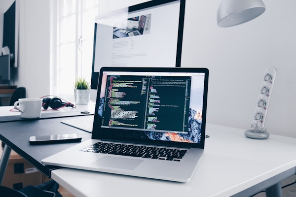

My Web Development Journey
What I Love About Web Development
Web development has captivated me since the moment I wrote my first line of HTML. There's something incredibly satisfying about building something from scratch and watching it come to life on the screen. Every project is like solving a puzzle—combining creativity with logic to create functional, beautiful websites.
What I love most is the endless opportunity for learning. Technology evolves rapidly, and there's always a new framework, tool, or technique to explore. Whether it's mastering responsive design, diving into JavaScript frameworks, or perfecting my CSS animations, each challenge pushes me to grow as a developer.
The best part? Seeing users interact with something I've built. Knowing that my code can make someone's life easier or their experience more enjoyable drives me to continuously improve my craft. It's this blend of creativity, problem-solving, and real-world impact that keeps me passionate about web development.

Why I Chose This Path
Growing up, I was always curious about how websites worked. I'd spend hours exploring different sites, wondering what made them tick. When I discovered that I could actually build them myself, I was hooked. Computer Science felt like the perfect blend of creativity and problem-solving that I was looking for.
My goal of achieving financial stability also plays a huge role. Full-stack development offers incredible career opportunities, and I'm committed to mastering both front-end and back-end technologies. I see it as my ticket to not just a job, but a fulfilling career where I can continuously challenge myself and grow professionally.
Beyond the practical benefits, web development allows me to express myself creatively while building something tangible. Every project is an opportunity to bring ideas to life and make a real impact in the digital world. Whether it's creating a sleek portfolio, an interactive web app, or a helpful tool, I find joy in every line of code I write.

The best way to predict the future is to create it. — Abraham Lincoln